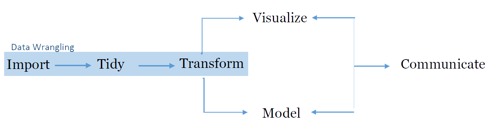

Chapter 4 Data Manipulation with dplyr
Now lets get directly into data wrangling!
Data wrangling is the process of preparing data for analysis. It often feels like you are fighting or ‘wrangling’ with the data to get it to a neat and useful state, hence the name. Things involved in data wrangling include importing data, subsetting data (selecting only the rows and columns you need), reshaping data, merging data and deriving new fields in the data.
In the data-analysis workflow, data wrangling encompasses the first phase, a very important one. So, let us learn how to do this.

For the purpose of data wrangling, we will use the Tidyverse library, which is a set of packages written especially for working with data. ‘Tidyverse’ is actually a collection of packages for data-manipulation and visualization. Specific packages in this library include dplyr (data manipulation), tidyr (data reshaping) and ggplot (plots and visualizations). For the purpose of this document, most of the functions/commands we will use come from the dplyr package.
Note: this online tutorial is also a very good and recommended tutorial for learning data manipulation with dplyr, and some of the examples there might be used throughout the chapter.
4.1 Objectives
- Learn how to import data in many formats.
- Learn about the pipe operator (%>%)
- Learn how to subset data.
- Learn how to group and summarize data.
- Learn how to merge or join different datasets.
4.2 Importing Data
The first step in data wrangling is actually obtaining the data that you will be working with. Data comes in different shapes, sizes and formats, so it is important to know how to import and read these in R. We will now see how to import different formats of data and which packages and commands to use to do this.
4.2.1 Importing Excel data
There are many different packages that can be used to read Excel files, but we will choose one that combines speed and flexibility: the xlsx package; this package allows both reading from and writing to Excel. Install it and load it using the commands:
#install
install.packages("xlsx")
#load
library(xlsx)Then, use the read.xlsx2 function to import an Excel file (the package also contains an identical function called read.xlsx but read.xlsx2 is faster when working with large files). So if we have a file named ‘mydata.xlsx’ inside the ‘data’ folder in our working directory, we would import it like this:
myExcelData <- read.xlsx2("data/mydata.xlsx", 1)The second argument (‘1’) is the index of the sheet to read, so if you were to have multiple sheets and wanted to read the third one, the command would be:
myExcelData <- read.xlsx2("data/mydata.xlsx", 3)You can take a quick look at the contents of your imported data in the following ways:
#View entire dataset
View(myExcelData)
#View first 5 rows
head(myExcelData, 5)
#Use the same 'head' function but using pipes:
myExcelData %>% head(5)4.2.2 Importing CSV or text data
Just as with Excel, there are many ways to read text and CSV files. However, perhaps the easiest way is to use the read.table function. Below you can see how to use this function to read different kind of text files.
#read a CSV file with comma separators
myCSVData <- read.table("myData.csv", sep = ",")
#read a CSV file with semi-colon separators
myCSVData <- read.table("myData.csv", sep = ";")
#read a tab-delimited text file
myCSVData <- read.table("myData.csv", sep = "\t")As you can see, this function takes two main arguments: the path to file, and the separator (sep) used in the chosen file. Note that although CSV stands for “Comma Separated Values”, you will sometimes find that these files are separated by semi-colons, tabs or even spaces. This is why the ‘sep’ argument must be specified.
You can look into the content of your imported data the same way as we did in the Excel section.
4.2.3 Importing SPSS data
Why would we want to import data in the SPSS format into R, instead of using another format? There are two main reasons.
- A lot of datasets already exist in SPSS format, especially survey data. We have a lot of SPSS datasets at the SIB from past surveys and activities.
- SPSS files keep the value labels for the fields and options, something that is very important for understanding a dataset.
Therefore, if we want our final outputs, after wrangling and analysing the data, to also have useful value labels without having to create them ourselves, we can import data in the SPSS format (or other labeled data-formats).
There are two main libraries for importing SPSS data: Haven and Foreign. For the purpose of this guide, we will be using the ‘haven’ library,which can also import data that in STATA, SAS and other formats.
Haven gives us the advantage of providing us with “tibbles” which are a modern version of dataframes that provide smarter printing and other advantages. Tibbles can also be converted back to regular dataframes using as.data.framme(tibble_name).
To read an SPSS file using Haven:
mySPSSdata <- read_sav("spssdata.sav")Notice that we did not have to provide any additional arguments to the function. If we had used Foreign,we would have needed to provide extra parameters to the function. On the other hand, Foreign is a bit more flexible, while Haven is easier.
You can then see the contents of your imported file:
#view all data
View(mySPSSdata)
#view first 10 rows
mySPSSdata %>% head(10)You can create an SPSS file from a dataframe using the write_sav function:
#write SPSS sav file
write_sav(myDataframe, "myNewFile.sav")Before we start practicing with data, let’s briefly introduce an important dplyr operator: the pipe operator.
4.3 The pipe %>% operator
The pipe operator (%>%) is very useful because it allows us to chain commands from left to right. This means that the result of one command can be passed directly to another command. It goes something like this:
#execute three commands, passing the result of the first to the second, and of the second to the third
dataframe %>% command1 %>% commmand2 %>% command3
#the same as before but now saving the result to an object
result <- dataframe %>% command1 %>% command2 %>% commmand3Two important thing to remember:
- When starting a pipe sequence, the first item to the LEFT of the pipe is the object or dataframe that will be USED by the commands in the pipe. In the example above,
dataframeis PASSED to command1, then the results of that is passed to command2, etc. - When using pipes and other tidyverse commands, these commands do not permanently modify the data UNLESS you save the results by assigning it to an object. In the previous example, running command1, command2 and command3 does not cause permanent changes until it was saved to an object called ‘result’, which will store the results of the operations.
4.4 Subsetting data with Dplyr
Now that we know how to read and import data, as well as how to use the pipe operator, we can start looking at how to work with and manipulate data. One of the most common operations on data is subsetting it; this means: only selecting some of the columns and some of the rows. The two important Dplyr functions that we will be using for this purpose are:
filter: for specifying which rows to keep based on a condition that must be satisfied.select: for specifying which columns should be kept. Columns can be specified either by name or index/position.
We will be practicing examples by playing with some dummy data from an imaginary Labour Force Survey. A few of the columns and the first 5 rows of this dataset are shown below.
##
## Attaching package: 'kableExtra'## The following object is masked from 'package:dplyr':
##
## group_rows| district | ed | household | individual_name | age | sex | is_employed | finalresult |
|---|---|---|---|---|---|---|---|
| 1 | 101 | 11 | Carmen Deer | 24 | female | TRUE | Complete |
| 2 | 102 | 12 | John Smith Sr. | 48 | male | TRUE | Partially Complete |
| 3 | 103 | 12 | John Smith Jr | 24 | male | FALSE | Complete |
| 4 | 104 | 13 | Pedro Dias | 35 | male | TRUE | Complete |
| 5 | 105 | 13 | Amira Dias | 33 | female | NA | REFUSAL |
The following examples will show how to do some common subsetting operations. We will be referring to the LFS table that we created earlier in this section.
4.4.1 Using filter
First, let’s see how to use the filter function:
## district ed household individual_name age sex is_employed
## 1 1 101 11 Carmen Deer 24 female TRUE
## 2 2 102 12 John Smith Sr. 48 male TRUE
## 3 3 103 12 John Smith Jr 24 male FALSE
## 4 4 104 13 Pedro Dias 35 male TRUE
## 5 5 105 13 Amira Dias 33 female NA
## finalresult
## 1 Complete
## 2 Partially Complete
## 3 Complete
## 4 Complete
## 5 REFUSAL#- save rows containing females that are unemployed
unemployedFemales <- lfsData %>% filter(sex == "female", is_employed == TRUE)In the previous example, the first expression filters respondents who are over 14 (and not 999 which is a special value for ‘missing’), and prints/displays the results. The second expression filters respondents who are female and who are employed and does not display the results but instead SAVES them in the unemployedFemales object.
Import to remember about the filter function:
- You use the R comparison operators to create conditions, such as
==(equal to),!=(not equal to),>(greater than),<=(less than or equal to). - You can specify more than one condition, separating them using commas. Eg:
filter(condition1, condition2, condition3). - You can als use the OR operator, where AT LEAST one of your listed conditions must be true. For this, use
|. (Example:fattyfoods <- allfoods %>% filter(foodgroup == "fats" | fatcontent > 0.5).- The above example can be read in plain English as: “From the allfoods dataframe, filter the rows where the value in the foodgroup column is”fats", OR where the value in the fatcontent column is greater than 0.5, and save these rows in the fattyfoods object.
4.4.2 Using select
Now lets see how to use the select function:
##-- Using select without saving results
#- display the 'age' and 'finalresult' columns of the dataset
lfsData %>% select(age, finalresult)## age finalresult
## 1 24 Complete
## 2 48 Partially Complete
## 3 24 Complete
## 4 35 Complete
## 5 33 REFUSAL##-- Using select AND saving the results
#- save the 'district', 'age' and 'finalresult' columns of the dataset
myDistrictData <- lfsData %>% select(district, age, finalresult)Now lets put use the two commands together:
##-- Using select and filter together
#- display the interview__key and name for unemployed males in the dataset
lfsData %>%
filter(sex == "male", is_employed == FALSE) %>%
select(individual_name, finalresult)## individual_name finalresult
## 1 John Smith Jr Complete#- The same command as before but now saving the results
unemployedMales <- lfsData %>%
filter(sex == "male", is_employed == FALSE) %>%
select(individual_name, finalresult)As you see in the previous examples, when you are chaining operations with a pipe, it is good to start each operation on a new line. This makes for cleaner, much more readable code. The best thing about DPLYR is that it makes manipulating data so clean to read and write!! For comparison, here is how you would write the previous example using plain R:
##-- Using select and filter together
#- display the interview__key and name for unemployed males in the dataset
lfsData[lfsData$sex == "male" & lfsData$is_employed == FALSE, c("individual_name", "finalresult")]
#- The same command as before but now saving the results
unemployedMales <- lfsData[lfsData$sex == "male" & lfsData$is_employed == FALSE, c("individual_name", "finalresult")]As we can see, we can still do subsetting in base/plain R, but it is more confusing to read and write!! DPLYR allows you to use explicit action words such as SELECT and FILTER that automatically let your brain know what is going on.